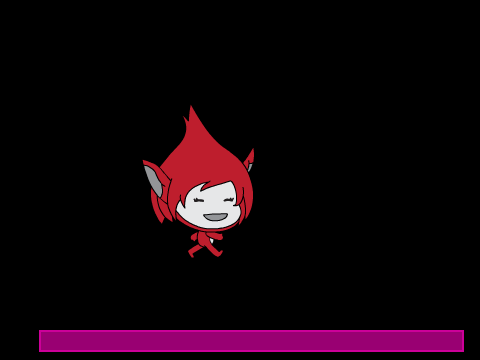
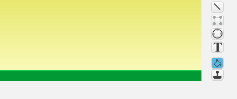

Før Super Mario fikk sine egne spill het han Jumpman. I dette
prosjektet skal vi lage et Super Mario-lignende plattformspill. Det er
ganske involvert, og vi vil derfor dele opp prosjektet i fire deler
som til sammen blir et spennende spill.
I denne første delen skal vi fokusere på å sette opp en hovedløkke for
spillet vårt, samt se hvordan vi kan animere Jumpman på en ganske
snedig måte.

Oversikt over prosjektet
Dette prosjektet består av 4 deler hvor vi stadig videreutvikler
spillet vårt.
Dette er del 1 hvor vi vil programmere helten vår, Jumpman, og
spesielt animere ham alt etter som om han står i ro, løper eller
hopper.
I del 2 vil vi se hvordan vi kan oppdage
at Jumpman berører forskjellige ting, og spesielt hvordan vi kan se
forskjellen på om han hopper opp i en plattform eller står på toppen
av den.
I del 3 skal vi utvide verdenen vår ved
å flytte på bakgrunnen. Vi vil da kunne løpe rundt og oppdage
plattformer utenfor skjermen.
I fjerde og siste del vil vi lære hvordan
vi lager flere nivåer, samt hvordan vi kan inkludere elementer som
smarte fiender og bevegelige plattformer.
Steg 1: En kontrollerende figur
For å ha fleksibilitet i hvordan vi animerer Jumpman vil vi skille
mellom hvordan figuren kontrolleres og hvordan den animeres.
Dersom du allerede har gjort
Donkey Kong-oppgaven vil du kjenne
igjen mye av koden vi utvikler i denne oppgaven. Bruk i såfall gjerne
ryggsekken for å kopiere inn koden du laget på hoppefiguren der, siden
du kan gjenbruke mye av koden (men en del vil også være forskjellig).
Sjekkliste
Start et nytt prosjekt.
La kattefiguren bli værende (den vil ikke synes i det ferdige
spillet), men gi den navnet Kontroller.
Tegn en farget linje nederst på bakgrunnen. I denne delen av
prosjektet vil dette være plattformen Jumpman kan bevege seg rundt
på.

For å styre hvordan spillet oppfører seg skal vi bruke en hovedløkke
som vil sende meldinger til alle figurene. Figurene velger så hvordan
de vil svare på meldingene.
Lag de følgende to skriptene på Scenen:
når grønt flagg klikkes
send melding [nytt spill v]
når jeg mottar [nytt spill v]
send melding [startposisjon v]
for alltid
send melding [fysikk v]
send melding [sjekk plattform v]
send melding [sjekk tastetrykk v]
send melding [flytt figurer v]
send melding [vis animasjon v]
slutt
Hvis du leser gjennom meldingene ser du at vi har laget en liste
over alt som må gjøres hver gang vi vil oppdatere spillet vårt.
Vi vil bruke variablene (fartX) og (fartY) for å
kontrollere bevegelsen til Jumpman. Lag disse to variablene på
Kontroller-figuren. La dem gjelde kun for denne figuren.
Nå kan vi se hvordan hovedløkken fungerer. Lag disse fire skriptene
på Kontroller-figuren:
når jeg mottar [startposisjon v]
gå til x: (-100) y: (-60)
sett [fartX v] til [0]
sett [fartY v] til [0]
når jeg mottar [fysikk v]
sett [fartX v] til [0]
endre [fartY v] med (-0.5)
når jeg mottar [sjekk plattform v]
hvis (berører fargen [#009900]?)
sett [fartY v] til [0]
slutt
når jeg mottar [flytt figurer v]
endre x med (fartX)
endre y med (fartY)
Om du tester spillet ditt ved å klikke på det grønne flagget, skal
du se at Kontroller-figuren faller ned til plattformen, og blir
stående på den.
Dersom du allerede har gjort
Donkey Kong-oppgaven bør du
sammenligne denne koden med slik vi skrev den der. Ser du at koden
er den samme, men vi har organisert den litt annerledes? Når vi
lager et større spill slik som dette er det enklere å holde oversikt
når hvert skript er ganske lite og bare skal gjøre en ting!
Steg 2: Animasjoner!
På tide å animere helten vår!
Nå har vi laget en Kontroller-figur. Men vi sa tidligere at denne
figuren ikke vil synes i det ferdige spillet. Vi skal nemlig bruke
egne figurer for animasjon. På denne måten er det lett å bruke
forskjellige animasjoner når figuren står i ro, når den løper og når
den hopper.
Sjekkliste
Lag en ny figur med flere drakter som animerer at den står i ro. Du
kan gjerne tegne denne selv. Alternativt har for eksempel figurene
Fantasi/Giga og Fantasi/Pico fine animasjoner. Gi figuren navnet
Animasjon - Stå.
Lag en ny variabel, (animasjon). Denne må gjelde for alle
figurer. Denne skal vi bruke til å bestemme hvilken animasjon vi
vil vise.
Legg til klossen sett [animasjon v] til [stå] inne i
hvis-testen i sjekk plattform-skriptet til
Kontrolleren. Det betyr at vi vil vise stå-animasjonen når figuren
står på plattformen.
På Animasjon - Stå-figuren trenger vi bare et skript, nemlig det
som viser figuren:
når jeg mottar [vis animasjon v]
hvis ((animasjon) = [stå])
pek i retning ([retning v] av [Kontroller v])
sett x til ([x-posisjon v] av [Kontroller v])
sett y til ([y-posisjon v] av [Kontroller v])
neste drakt
vis
ellers
skjul
slutt
Legg merke til hvordan vi kopierer posisjonen til
Kontroller-figuren. Animasjonen gjøres veldig enkelt med bare en
kloss, neste drakt.
Du kan endre animasjonen ved å legge til flere drakter. Et tips er
at om du vil at animasjonen skal gå litt saktere kan du kopiere den
samme drakten mange ganger. For eksempel kan en stå-animasjon
bestå av mange av den samme drakten, og så kanskje noen få drakter
hvor figuren smiler litt, flytter seg ørlite eller noe lignende.
Det er på tide vi skjuler Kontroller-figuren. Dessverre kan vi
ikke bruke en skjul-kloss fordi da vil ikke
berører-klossene fungere lenger. I stedet gjør vi
figuren helt gjennomsiktig. Legg til dette skriptet på
Kontroller-figuren:
når grønt flagg klikkes
sett [gjennomsiktig v] effekt til (100)
begrens rotasjon [vend sideveis v]
Legg til nye figurer, Animasjon - Løp og Animasjon - Hopp. For
eksempel kan du bruke figurene Fantasi/Giga walking eller
Fantasi/Pico walking. Du kan også tegne drakter selv.
Lag tilsvarende skript på de nye Animasjon-figurene. Det eneste du
trenger å endre fra skriptet på Animasjon - Stå-figuren er
hvis-testen.
Om du vil teste animasjonene kan du endre sett [animasjon v] til [stå]-klossen (men husk å endre tilbake når du er ferdig å
teste).
Steg 3: En hoppende helt
Vi har animert Jumpman, men han beveger seg ikke! Det må vi gjøre noe
med.
Vi skal nå skrive koden som får Jumpman til å bevege seg. Husk at all
denne koden skal være på Kontroller-figuren. Og du trenger ingen
løkker på Kontroller siden vi bruker hovedløkken til spillet.
Sjekkliste
Vi skal nå skrive flere hvis-tester på et nytt når jeg mottar [sjekk tastetrykk v]-skript.
Først kan vi få Jumpman til å hoppe:
hvis ((berører fargen [#009900]?) og (tast [pil opp v] trykket?))
sett [fartY v] til [5]
sett [animasjon v] til [hopp]
slutt
For at Jumpman skal løpe sidelengs vil vi snu figuren i riktig
retning, og sette (fartX)-variabelen. For eksempel kan vi
flytte ham mot høyre med en test som dette:
hvis (tast [pil høyre v] trykket?)
pek i retning (90 v)
sett [fartX v] til [5]
hvis (berører fargen [#009900]?)
sett [animasjon v] til [løp]
slutt
slutt
Legg selv til en hvis-test for å flytte Jumpman mot
venstre.
Prøv spillet ditt! Kan du løpe og hoppe rundt på plattformen?
Du oppdager kanskje at Jumpman står på hodet når han løper mot
venstre? Dette fikser du ved hjelp av begrens rotasjon [vend sideveis v]-kloss på hver av Animasjon-figurene.
Steg 4: Videreutvikling av spillet
Vi har så langt bare laget grunnlaget for et spill. En animert figur
som kan springe og hoppe rundt. I del 2
vil vi fortsette utviklingen av spillet. Men om du vil jobbe litt
videre før den oppgaven kan du prøve noe av det følgende.
Ideer til videreutvikling
Prøv forskjellige verdier for (fartX) og (fartY) i
sjekk tastetrykk-skriptet. Hvordan forandrer det oppførselen til
Jumpman?
Hva med å legge til noen lyder? Korte, enkle lyder når Jumpman
beveger seg kan passe. Og kanskje et lite rop når han hopper, eller
en litt utålmodig Hallo! om han blir stående for lenge i ro? Husk
at du kan ta opp egne lyder også, ikke bare bruke lydene som følger
med Scratch.
Lag en forside til spillet. Om du lager en forside som forteller
litt om hvordan man spiller spillet ditt blir det enklere for andre
å spille det også!
Kan du legge til flere bevegelser som kan animeres? Kanskje Jumpman
kan sette seg ned om du trykker nedoverpilen? Eller kanskje han kan
ta en salto i luften eller gjøre et superhopp om man gjør de riktige
tastaturkombinasjonene?
Forbedre denne siden
Funnet en feil? Kunne noe vært bedre? Hvis ja, vennligst gi oss tilbakemelding ved å lage en sak på Github eller fiks feilen selv om du kan. Vi er takknemlige for enhver tilbakemelding!